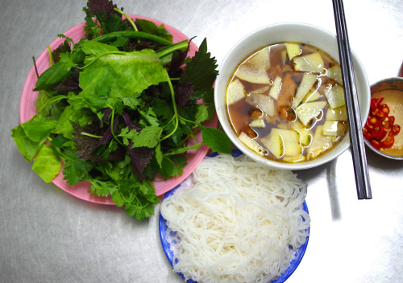

Cuối tuần, làm bún chả Hà Nội chiêu đãi cả nhà
Bún chả Hà Nội ngon hay không phụ thuộc vào cách tẩm ướp thịt, độ chín và mềm của miếng thịt nướng cũng như độ vừa miệng của nước chấm chua ngọt
Nguyên liệu
Thịt ba chỉ hoặc thịt nạc vai. Nếu muốn ăn nhiều mỡ, bạn dùng thịt ba chỉ, thích ăn thịt mềm và ít mỡ, dùng thịt nạc vai. Bún sợi nhỏ. Hành khô, tỏi, sả, đường, tiêu, hạt nêm, mì chính, nước màu (kẹo đắng), dầu ăn để ướp thịt. Nước mắm, đường, tỏi, ớt, giấm, nước sôi để pha nước chấm. Rau ăn kèm gồm húng bạc hà, kinh giới, tía tô, mùi ta, xà lách, đu đủ ngâm.Sơ chế
Thịt một phần đem thái lát mỏng (nhưng không mỏng quá) để làm chả miếng, một phần đem bằm nhỏ để làm chả viên. Hành, tỏi, sả giã nhuyễn, vắt lấy nước. Đầu tiên, ướp thịt với đường, tiêu, hạt nêm, mì chính, khoảng 15 phút, sau đó cho nước hành tỏi, sả vào ướp thêm. Trước khi nướng, rưới một ít nước màu (kẹo đắng) và dầu ăn vào thịt. Sau đó, xếp thịt ra vỉ nướng, nướng trên than củi. Với chả viên, cũng ướp thịt tương tự chả miếng, sau đó nặn viên là những miếng nhỏ, tròn và dẹp (dày khoảng 1-2cm), rồi xếp đều lên vỉ và nướng.Nước Chấm
Món bún chả Hà Nội đặc biệt quan trọng ở nước chấm. Nước chấm không thể thiếu đu đủ ngâm ăn kèm. Đầu tiên, đu đủ xanh đem gọt vỏ, bỏ ruột, rửa sạch rồi xắt nhỏ, sau đó ngâm giấm khoảng 15 phút. Nước chấm gồm nước mắm hòa nước sôi theo tỷ lệ 1:7 (nếu không có nước sôi bạn có thể đun nóng nước mắm và nước lọc lên), sau đó cho đường, giấm, ớt, tỏi. Nước chấm món bún chả phải đảm bảo nóng bốc khói.Trình Bày
Trước khi ăn, thả đu đủ và chả vào bát nước chấm.
Khi ăn, bày một đĩa bún, một bát nước chấm và đĩa rau sống bên cạnh.
Lưu Ý
Khi nướng thịt trên than củi, nếu không dùng vỉ nướng, có thể kẹp thịt vào các thanh tre, đúng kiểu nướng chả ngày xưa. Nếu không có than củi, bạn có thể dùng lò nướng, nhưng thường không ngon bằng nướng than. Một số người dùng dưa góp gồm su hào và cà rốt thay đu đủ ngâm nhưng ăn đu đủ ngâm mới đúng vị, bởi đu đủ giòn và ngọt hơn. Có thể cho một ít mắm tôm vào ướp thịt, (cho mắm tôm vào cùng lúc với đường, tiêu, hạt nêm, mì chính) giúp thịt mềm và đậm đà hơn. Khi nướng thịt lên, mùi nồng của mắm tôm sẽ biến mất.